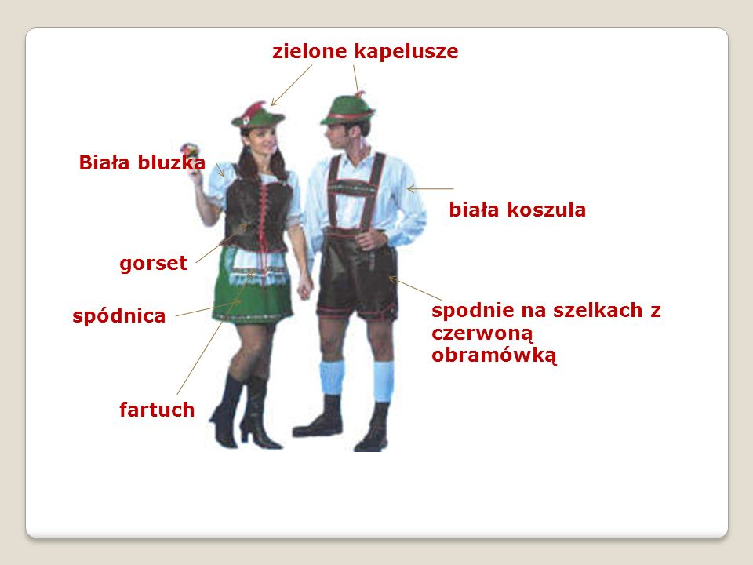

Elementy kulturowe


- Zielone kapelusze - popularne w XIX wieku, często ozdobione wstążkami.
- Grüne Hüte - im 19. Jahrhundert beliebt, oft mit Bändern verziert.
- Biała bluzka - klasyczny element ubioru, często noszona przez kobiety w połączeniu z gorsetem.
- Weiße Bluse - ein klassisches Kleidungsstück, oft von Frauen in Kombination mit einem Korsett getragen.
- Gorset - element stroju modelujący sylwetkę, popularny w XIX wieku.
- Korsett - ein Kleidungsstück, das die Figur formte, im 19. Jahrhundert sehr beliebt.
- Spódnice - długie i szerokie, często noszone razem z gorsetami i bluzkami.
- Röcke - lang und weit, oft in Kombination mit Korsetts und Blusen getragen.
- Fartuch - częsty dodatek do stroju, szczególnie w pracy domowej.
- Schürze - ein häufiger Bestandteil der Kleidung, besonders im Haushalt getragen.
- Spodnie na szelkach z czerwoną obramówką - część męskiego stroju, szczególnie w stylu wiktoriańskim.
- Hosenträgerhosen mit rotem Rand - ein Teil der Männerbekleidung, besonders im viktorianischen Stil.
- Biała koszula - element stroju męskiego, noszony pod marynarką lub frakiem.
- Weiße Hemd - ein Bestandteil der Männerkleidung, unter einem Anzug oder Frack getragen.